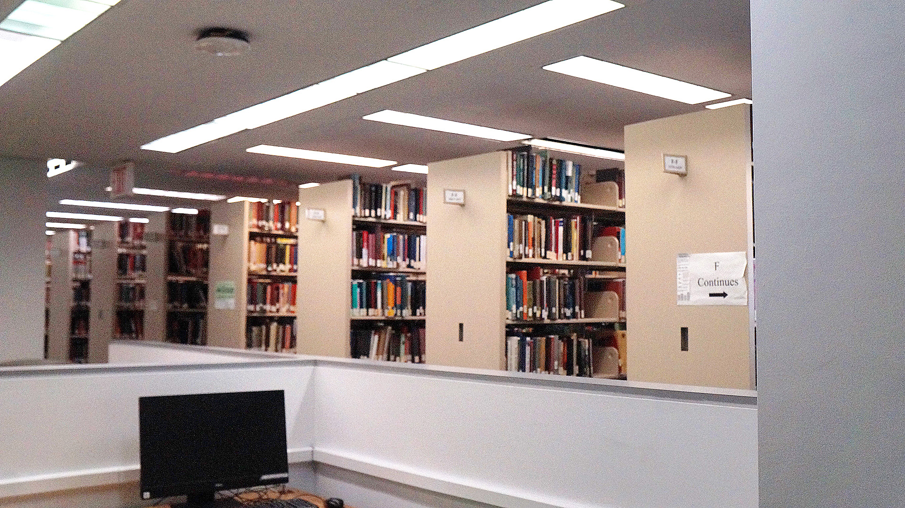
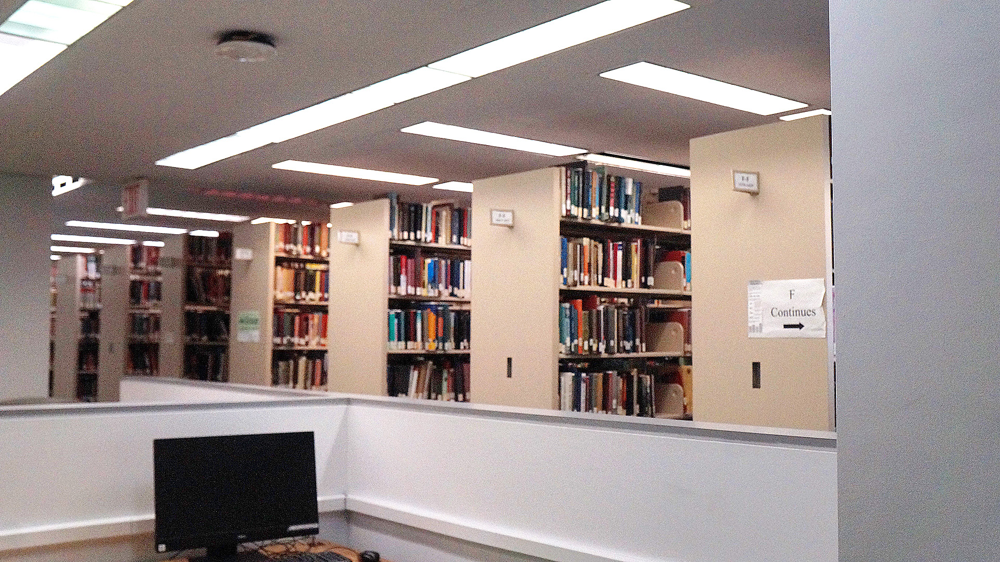

This picture was taken in the library. However, due to insufficient light, the picture was too dark. But after Photoshop curves, the brightness increased. Then, when the picture was slightly sharpened, the clarity was even higher.
Go to photo1
Go to homepage
 
